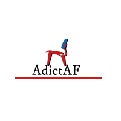

<mdb-navbar SideClass="navbar fixed-top navbar-expand-lg navbar-dark blue scrolling-navbar ie-nav" [containerInside]="false">

  <logo>
    <a class="navbar-brand" href="#">
      
    </a>
    <logo>
      <a class="logo navbar-brand" href="#"><strong>AddictAF</strong></a>
    </logo>
  </logo>
  <links>
    <ul class="navbar-nav mr-auto">
      <li class="nav-item active waves-light" mdbWavesEffect>
        <a href="/posts/?category=hot" class="nav-link">Hot</a>
        <!--<a [routerLink]="['/posts']"-->
           <!--[queryParams]="{ category: 'hot' }"-->
           <!--class="nav-link">-->
          <!--Hot-->
        <!--</a>-->
      </li>
      <li class="nav-item waves-light" mdbWavesEffect>
        <a href="/posts/?category=trending" class="nav-link">Trending</a>
        <!--<a [routerLink]="['/posts']"-->
           <!--[queryParams]="{ category: 'trending' }"-->
           <!--queryParamsHandling="merge" class="nav-link">-->
          <!--Trending-->
        <!--</a>-->
      </li>
      <li class="nav-item waves-light" mdbWavesEffect>
        <a href="/posts/?is_video=true" class="nav-link">Videos</a>
        <!--<a [routerLink]="['/posts']"-->
           <!--[queryParams]="{ is_video: true }"-->
           <!--queryParamsHandling="merge" class="nav-link">-->
          <!--Videos-->
        <!--</a>-->
      </li>
      <li class="nav-item waves-light" mdbWavesEffect>
        <a routerLink="/explore" class="nav-link" routerLinkActive="active">Explore</a>
      </li>
    </ul>
    <ul class="navbar-nav nav-flex-icons">
      <!--<form name="tags" id="tags" class="form-inline">-->
        <!--<input type="text" [formControl]="search" class="input-group-sm">-->
        <!--<button class="btn btn-warning btn-sm" type="submit">-->
          <!--<i class="fa-search fa"></i></button>-->
      <!--</form>-->
      <li class="nav-item waves-light" mdbWavesEffect>
        <a class="nav-link"><i class="fa fa-facebook"></i></a>
      </li>
      <li class="nav-item waves-light" mdbWavesEffect>
        <a class="nav-link"><i class="fa fa-twitter"></i></a>
      </li>
      <li class="nav-item waves-light" mdbWavesEffect>
        <a class="nav-link"><i class="fa fa-instagram"></i></a>
      </li>
    </ul>
  </links>
</mdb-navbar>
